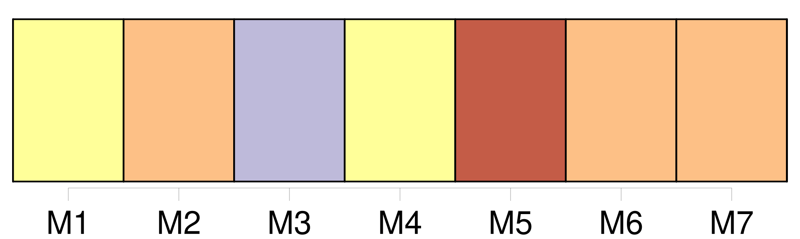
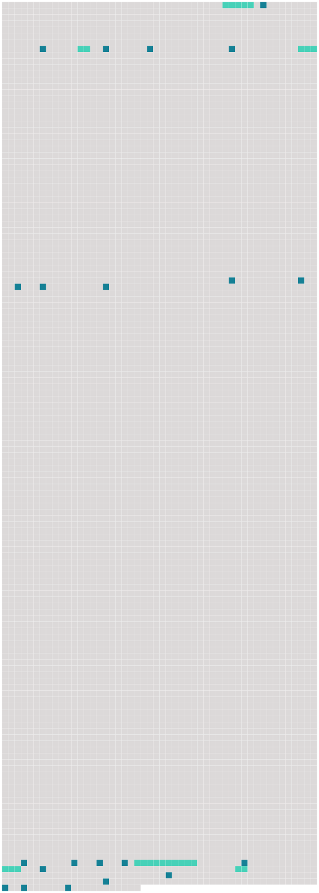

Longueur nb maillons : 27 mentions |
 |
Sans même prendre la peine d'allumer un feu, chacun improvisa son repas de quelques conserves froides, puis se roula dans sa couverture, et s'endormit, confiant la garde du campement [au chien « Turko »] , [qui] appartenait à un jeune ingénieur du nom de Roger de Ville. [11 phrases] Il fut décidé qu'on laisserait [Turko] en campement ; mais lorsque [le chien] vit partir [son] maître, il fut impossible de [le] retenir.
Au fond, Roger, n'était pas fâché de [l'] emmener, il n'aimait pas à être séparé longtemps [du fidèle animal] [66 phrases] En ce moment, [Turko] se mit à gambader et à lécher la main de [son] maître, ce qu' [il] faisait toujours quand [il] était content : « Vois, reprit Roger, [Turko] approuve mon projet, ce doit être de bon augure. [206 phrases] [Turko] , le chien du gouverneur, accompagnait [son] maître, selon [son] habitude. Or [Turko] était [un chien sage et docile, très populaire à Némoville] , il était si bien établi que [Turko] n'aboyait jamais sans de bonnes raisons, qu'un hurlement [du chien fidèle] était devenu pour [son] maître un signal certain qu'il se passait quelque chose d'extraordinaire.
Roger et Paul furent donc assez surpris, au retour de cette pêche miraculeuse, de voir [le chien] se dresser sur le bord de l'embarcation et pousser un hurlement prolongé. [1 phrases]
» [1 phrases] — « Serait -ce cette épave, là bas, qui cause les hurlements de [Turko] ?? [1 phrases]
— « Allons voir, ajouta Roger, je prends toujours au sérieux les avertissements de [Turko] , car [il] m'a donné mille preuves de [son] flair », dit -il en s'adressant au curé. |
 |
Il est possible de télécharger la ressource sur la page Ortolang |
Si vous avez des questions ou vous voyez des erreurs, merci d'envoyer un mail à silvia.federzoni89@gmail.com |